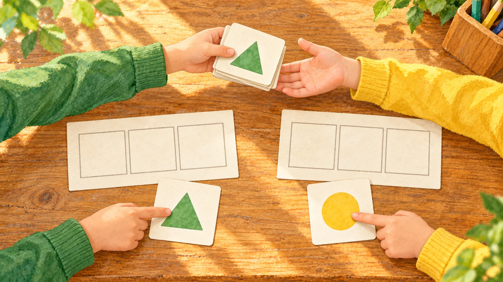
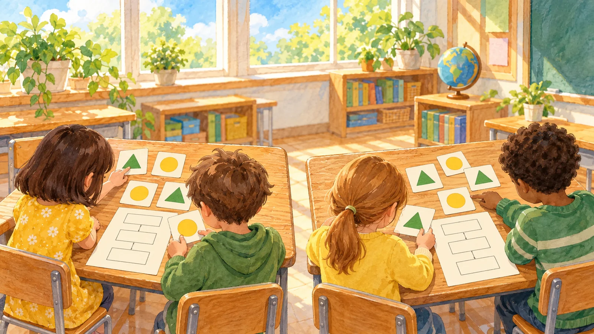
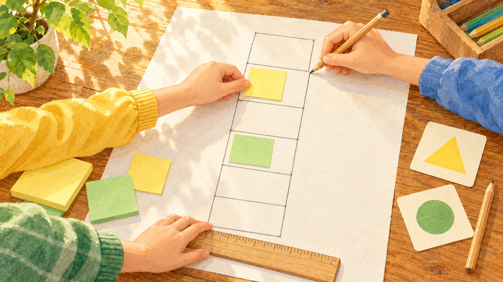

절차 나는 몇 장을 빠뜨릴까
절차 나는 처음 찾으면 멈춰요. 몇 장을 빠뜨릴지 0장·1장·2장에서 골라요.
가는 끝까지 다 보고, 나는 처음 찾으면 멈춰요. 그래서 나는 뒤에 있는 답 카드를 빠뜨릴 수 있어요.
모두 찾기에서는 먼저 빠뜨린 카드가 없는지 보고, 그다음 본 장수를 견줘요.
나는 한 장만 찾으면 될 때는 알맞은 절차예요.

△이고 5보다 큰 카드 모두 찾기
가끝까지 다 본다
나처음 찾으면 멈춘다
셋 가운데 하나를 짚어요

△이고 5보다 큰 카드 모두 찾기
나가 빠뜨릴 카드를 눌러 골라요. 빠뜨릴 카드가 없으면 그냥 확인을 눌러요.
나는 첫 답 카드에서 멈춰요

나를 시험하는 묶음을 검증 묶음이라고 해요. 카드를 누르면 모양과 숫자가 바뀌어요. 다 만들면 돌려 봐요.
카드를 눌러 바꿔 봐요
그림 일부는 생성형 AI로 만들었어요